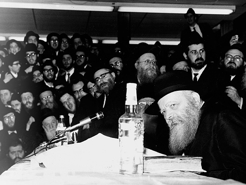

The Rebbe Knows Everything!
Stories about the Rebbe that were told by his secretary, R’ Leibel Groner.
Prepared for publication by R. Studnitz

IF HE’S THE REBBE, HE KNOWS EVERYTHING!
A Chassida of the Rebbe Rayatz was married to a “Misnaged.” Boruch Hashem they lived peacefully together and had no shalom bayis problems. One day the husband, who was a businessman, came home and told his wife that they had a very serious problem. Someone had informed on him, accusing him of engaging in illegal activities, and he had to appear in court. He had already spoken to a lawyer who said the matter was quite serious and they needed to plan a strategy for how to win the case.
When she heard this, she immediately said, “Go to the Rebbe Rayatz and tell him the situation and ask him how to proceed.”
He said, “I understand that the Rebbe knows how to learn Gemara, Kabbala, and Chassidus, but what does he know of legal matters?”
His wife declared, “If he’s the Rebbe, then he knows everything. There is nothing he does not know!”
After some time, he was convinced and he went to Warsaw. He told the Rebbe about the case against him. The Rebbe said, “You need to go to Vilna where there is a dentist. Visit him and Hashem should grant you success.”
The man was taken aback by this advice that seemed peculiar and wholly unrelated to his problem. When he returned home he remonstrated with his wife and said, “Was that a joke? Do I have a toothache? If I go to a dentist he will ask me which tooth hurts and what will I say?”
His wife calmly replied, “If the Rebbe told you to go to Vilna, then go. There is no other choice. Go to Vilna.”
It took some time, but her husband finally agreed to go to Vilna. He sat down in the dentist’s chair and the dentist asked him, “What hurts you?”
“Uh, I don’t have a toothache.”
“So why are you here?”
“I came because I have been unjustly accused and the Rebbe Rayatz in Warsaw told me to come here.”
“The Rebbe sent you here? Fine, come back to my office tomorrow at four.”
The next day the man returned and the dentist seated him in the waiting room. As he sat there he overheard the dentist telling a patient about the case against him. The man grew angry and thought, “What is this? I told him personal information; why is he repeating it to someone else?” However, he restrained himself and said nothing.
A few minutes later the dentist came out of his room and said, “The man that you see here is a judge. I told him your problem and he wants to hear it from you. Come in and tell him your story.”
The two entered the room and after the judge heard him out, he asked him what he had to say in his defense. The man said he had proof that all the accusations were false and baseless and he even delineated the ridiculousness of the accusations.
“What day must you appear in court?” asked the judge. The man told him the date.
The judge took out his appointment book, examined it briefly and then smiled broadly, “You know what? That is the day I will be in court. Listen to what we will do. You don’t know me and I don’t know you. You show up on that day in court and when I ask you to defend yourself, tell me exactly what you told me here without giving any indication that we’ve met before.”
The man returned home and his wife asked him, “So what happened at the dentist?”
When he told her everything that had happened with the judge, she said, “Now do you believe that the Rebbe knows what he’s doing?”
The man was still not convinced and he said, “First let’s see how it works out.”
“Fine, though I consider it a done deal,” she said. “You will return home and everything will be fine. I am sure of it.”
Of course, that is what happened. The judge ruled that there was no basis to the accusation against him and the case was dismissed.
WHY DID HASHEM CREATE MICE?
A similar story happened with the Rebbe Maharash. A man was falsely accused of a crime. He was told to appear in court in Petersburg. First, he went to Lubavitch and poured out his heart to the Rebbe.
The Rebbe told him, “If Hashem created mice, then this indicates that we need mice.”
The man had no idea what sort of bracha this was. It was only when he appeared in court that he understood. When the judge asked the prosecutor to present his case against the Jew, he apologized and was embarrassed because he could not locate the papers. They asked for a two hour recess so they could find the papers, but even after that time had elapsed they did not find them.
The judge ruled, “If there are no papers, you are dismissed.”
On his way home he stopped off in Lubavitch to thank the Rebbe. Before he even opened his mouth, the Rebbe said, “Nu, so you see why Hashem created mice?”
NOTHING IS SAID OFFHANDEDLY
Someone who is not a Lubavitcher told me that he had to go to Europe on business and he wanted a bracha from the Rebbe. He had yechidus on Sunday. When he came out, he said, “I don’t understand your Rebbe. The Rebbe asked me where I will be next Shabbos. I told him that according to my schedule I would be leaving Europe on Thursday and arriving in New York on Friday. Since Shabbos begins at seven in the evening, that would not pose a problem.
“Once again, the Rebbe asked me where I would be for Shabbos. I repeated that I would be flying on Thursday and returning on Friday, but the Rebbe asked me a third time. I told him that I had already answered him twice and why was he asking me again? The Rebbe blessed me, ‘May Hashem help you wherever you are. May you have a joyous Shabbos.’”
A week and another few days went by and the man called the office and told me, “The flight left on Thursday on schedule, but there was an emergency landing in Greenland. At twelve o’clock on Friday afternoon, they announced that the plane was fixed and all passengers could return to their seats. When I asked when the flight was to land in New York, I was told it would be after Shabbos had begun. I told them that I could not fly for religious reasons and I remained at the airport.
“I started walking around, looking for a place to rest and finally found a room which had a sign on it that said ‘Do Not Enter.’ Well, if it says not to enter that means enter … I opened the door and saw a bearded Jew sleeping. I was happy to see him as I wouldn’t be alone on Shabbos. The man suddenly woke up and was surprised to see me. I felt that heaven had directed me to this place.
“What are you doing here?” I asked him.
“He said, ‘I am a shliach of the Rebbe. There is an American military base here with about forty Jewish soldiers. The Rebbe wants us to spend Shabbos with them. And what are you doing here?’
“I told him my story and then the Chassid said the problem was that only he had permission to enter the military base while I did not. He said he would ask the commander for a pass for me. After speaking to the commander, the matter was arranged.”
The businessman finished his story by saying he had never had such an uplifting Shabbos. He enjoyed listening to the Chassid speaking to the soldiers, the niggunim, the dancing etc. He was impressed to see how the Chassid was mekarev them and went about letting them know what they needed to do as Jews.
I told him, “The Rebbe’s bracha helped you so you did not spend Shabbos just anywhere. The Rebbe wanted you to be in a place where you would have a joyous Shabbos. It was no coincidence that the plane landed in Greenland. It could have landed in many other places.”
When the Rebbe asked him three times where he was spending Shabbos, it wasn’t an offhand question; it was meant to draw his attention to something. We need to be careful about every word the Rebbe says and obediently follow those words.
A QUARTER OF AN HOUR
The Rebbe once told me to call one of the shluchim. I was to tell him to get on the first plane leaving his city to travel to a certain city and find someone there. I called the shliach and a short while later he called back and said he checked with a travel agent and the first plane leaving was full.
I relayed this to the Rebbe and he said he should speak with the management, because sometimes they leave empty seats for emergencies. The shliach looked into it, but the answer was still that the plane was full. I told the Rebbe and the Rebbe said to tell the shliach to wait a quarter of an hour and then to ask the travel agent or the management again.
Ten minutes later the shliach called to say that someone had canceled his flight and he had gotten the man’s seat even though there was a long waiting list.
I told the Rebbe, who smiled and said, “Does he realize why that man canceled his flight?”
WHEN YOU RETURN HOME HEALTHY!
The following story happened to a businessman who now lives in Yerushalayim. He is not a Lubavitcher.
He planned a trip to Mexico in order to buy merchandise for his business. He had a one day stop-over in New York, so he called a Lubavitcher friend who lived in Crown Heights and asked if he could stay with him. The friend agreed.
After meeting him at the airport, the Lubavitcher excitedly said, “You came on a special day. It’s Yud Shvat, the yahrtzait of the Rebbe Rayatz and the day the Rebbe accepted the nesius. The Rebbe will farbreng tonight. I think you should attend.”
The man politely declined with the excuse that he was very tired, but his host insisted, “When will you have another opportunity to be at the Rebbe’s farbrengen? Forget about being tired and just come!”
The guest finally agreed, and when they went to 770 the Chassid sat his friend on the platform, in a seat near the Rebbe. Before the farbrengen, the Chassid coached his friend by saying that after the Rebbe said the first sicha, it was customary to take a cup of l’chaim.
The guest did as he was told and asked for a cup of l’chaim like everyone else and raised it towards the Rebbe. The Rebbe looked at him and motioned that he should drink it down. Then the Rebbe motioned that he should refill his cup and finish that too. When he finished the second cup, the Rebbe told him to refill it yet again. This was very surprising to the Chassidim and they all wanted to know who this person was.
As the farbrengen went on, the Rebbe turned to him again and told him to say l’chaim two more times so that he drank five cups in all.
On their way to the house, the guest thanked his host for taking him to the farbrengen and said that he had never heard such wonderful things before.
The next morning, before leaving for the airport, the Lubavitcher said to him, “The Rebbe is standing in shul now and giving out dollars for tz’daka. I suggest that you go to him and ask for a bracha for success for your trip to Mexico.” The guest agreed, but when he passed by the Rebbe, the Rebbe did not react at all to his request. He waited on the side and when the Rebbe finished giving out dollars, he asked the Rebbe again for a bracha for success. The Rebbe looked at him and said, “May Hashem help you return home in good health.”
The guest was taken aback by this and he asked the Lubavitcher what sort of bracha this was. The Chassid was just as surprised.
A week later, the Lubavitcher called me and related to me what his friend told him:
“When I got to Mexico I went to a store where I was supposed to get merchandise. While I was figuring out what I had to pay, the door suddenly opened and robbers with masks and revolvers came in and demanded all our money. I surprised myself when I shouted, ‘Rebbe, help me!’ A minute later, the police came in and arrested the robbers and returned all our money.”
I said to him, “Do you realize what a z’chus you had? What would have happened if you hadn’t been to the Rebbe and had not received his bracha to return home in good health? Who knows how that would have ended! The Rebbe’s bracha is what helped you.”
THE REBBE EMPOWERS THE DOCTOR
A woman called and said her husband was sick for a number of months, and yet the doctors were unable to help him. She had heard that the Lubavitcher Rebbe gives good advice. I asked her for her husband’s name and his mother’s name and gave the note to the Rebbe. The Rebbe advised her to consult with a doctor-friend.
When I told this to the woman, she said in despair, “But we went to four doctor-friends and none of them helped!”
I relayed this to the Rebbe and he said, “Ask her when she went to see them, before I told her or after I told her?”
THE REBBE LISTENED TO THE DOCTOR
People close to the Rebbe noticed that he was suffering in great pain but was not talking about it. I got a phone call from the Rebbetzin a”h and she said, “I would like you to ask the Rebbe to give permission to Dr. Seligson to examine him. I spoke to him about it, but he did not agree.”
I went to the Rebbe and told him that Dr. Seligson was here; the Rebbe agreed to have him come in. Obviously, I had made sure that Dr. Seligson would be standing by at the ready.
When the doctor left the Rebbe’s room I asked him what was happening. He replied that the Rebbe was suffering terribly from kidney stones. He gave the Rebbe advice about what to do but the Rebbe had said, “Who are you to mix in to G-d’s affairs? If G-d gives pain, that means there is a reason for it and I have to endure it.”
Since the doctor had no response to that, he left the room.
I told Dr. Seligson, “Why didn’t you respond that the Torah tells us that a doctor has permission to heal?”
Dr. Seligson said, “Oy, I forgot that.”
In the meantime, the Rebbetzin came to 770 and I told her what had happened. She brought the doctor back to the Rebbe’s room and he told the Rebbe, “I heard that the Torah gives a doctor permission to heal.”
The next day the Rebbetzin told me that the Rebbe did what the doctor recommended and his condition was somewhat improved.
BEYOND WHAT YOU SEE
The tzaddik Rabbi Mordechai of Chernobyl once spoke about the greatness of hidden tzaddikim. One of the older Chassidim said to him, “We are sure that among your Chassidim there are hidden tzaddikim. Perhaps you can show us one of them.”
The tzaddik said, “You are looking at a tzaddik nistar.”
“But Rebbe, you are famous as a tzaddik; you are not hidden!”
The tzaddik said, “What a pity it would be on all of you, if we were only what you can see.”
From this story we learn that all the great things we can say about the Rebbe is not even close to the complete reality. The Rebbe’s p’nimius is impossible to know or reveal. What is a Rebbe? A Rebbe is above any understanding and explanation. Nobody can say what a Rebbe is. Every word the Rebbe says has a powerful impact on the events of this world so the Rebbeim were very careful with their words. On our part, we need to be careful and listen to everything the Rebbe says.
May Hashem help and the Rebbe be revealed, below ten t’fachim, and he will redeem us and lead us upright to our holy land!
(From a farbrengen)
Rabbi Leibel Groner. "The Rebbe Knows Everything!." Beis Moshiach, no. 836 (June 6, 2012).